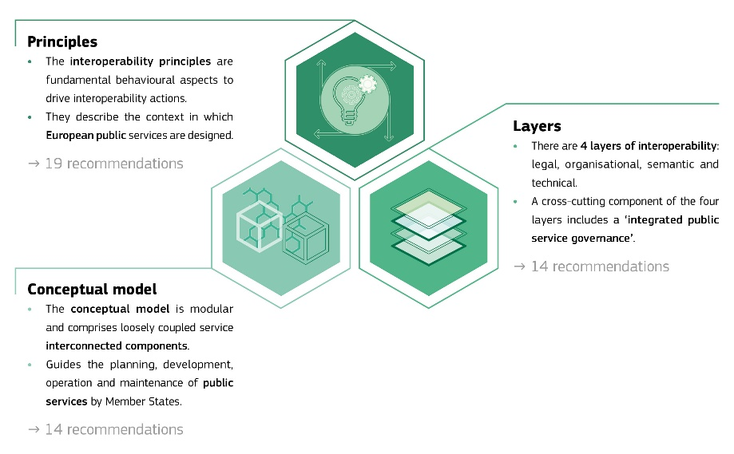
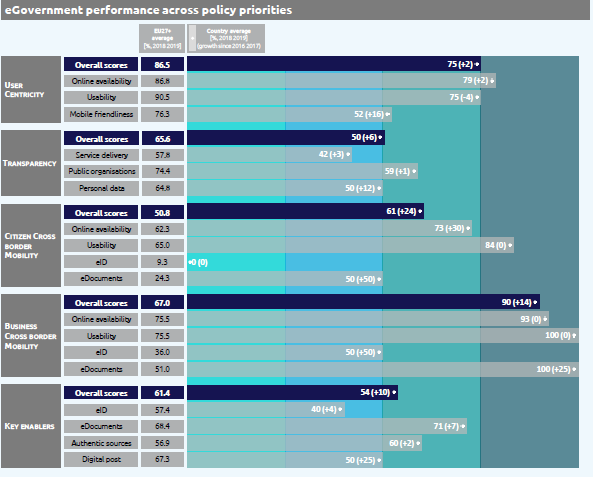

Digital Public Administration factsheet 2020
Cyprus
Table of Contents
Digital Public Administration factsheet 2020
2 Digital Public Administration Highlights 9
3 Digital Public Administration Political Communications 11
4 Digital Public Administration Legislation 19
5 Digital Public Administration Governance 23
6 Digital Public Administration Infrastructure 30
7 Cross border Digital Public Administration Services for Citizens and Businesses 41
Country
Profile
1
Country Profile
Basic data
Population: 875 899 inhabitants (2019)
GDP at market prices: 21 943.6 million Euros (2019)
GDP per inhabitant in PPS (Purchasing Power Standard EU 27=100): 89 (2019)
GDP growth rate: 3.2% (2019)
Inflation rate: 0.5% (2019)
Unemployment rate: 7.1% (2019)
General government gross debt (Percentage of GDP): 95.5% (2019)
General government deficit/surplus (Percentage of GDP): 1.7% (2019)
Area Total land cover: 9 249 km2
Capital city: Nicosia
Official EU language: Greek
Currency: Euro
Source: Eurostat (last update: 26 June 2020)
Digital Public Administration Indicators
The following graphs present data for the latest Generic Information Society Indicators for Cyprus compared to the EU average. Statistical indicators in this section reflect those of Eurostat at the time the Edition is being prepared.
Percentage of individuals using the internet for interacting with public authorities in Cyprus | Percentage of individuals using the internet for obtaining information from public authorities in Cyprus |
| |
Percentage of individuals using the internet for downloading official forms from public authorities in Cyprus | Percentage of individuals using the internet for sending filled forms to public authorities in Cyprus |
Interoperability State of Play
In 2017, the European Commission published the European Interoperability Framework (EIF) to give specific guidance on how to set up interoperable digital public services through a set of 47 recommendations. The picture below represents the three pillars of the EIF around which the EIF Monitoring Mechanism was built to evaluate the level of implementation of the EIF within the Member States. It is based on a set of 68 Key Performance Indicators (KPIs) clustered within the three main pillars of the EIF (Principles, Layers and Conceptual model), outlined below.

Source: European Interoperability Framework Monitoring Mechanism 2019
Source: European Interoperability Framework Monitoring Mechanism 2019
eGovernment State of Play
The graph below is the result of the latest eGovernment Benchmark report, which evaluates the priority areas of the eGovernment Action Plan 2016-2020, based on specific indicators. These indicators are clustered within four main top-level benchmarks:
User Centricity – indicates the extent to which a service is provided online, its mobile friendliness and usability of the service (in terms of available online support and feedback mechanisms).
Transparency – indicates the extent to which governments are transparent about (i) the process of service delivery, (ii) the responsibilities and performance of public organisations and (iii) the personal data processed in public services.
Cross-Border Mobility – indicates the extent to which users of public services from another European country can use the online services.
Key Enablers – indicates the extent to which technical and organisational pre-conditions for eGovernment service provision are in place, such as electronic identification and authentic sources.
The 2020 report presents the biennial results, achieved over the past two years of measurement of all eight life events used to measure the above-mentioned top-level benchmarks. More specifically, these life events are divided between six ‘Citizen life events’ (Losing and finding a job, Studying, Family life, all measured in 2012, 2014, 2016 and 2018, and Starting a small claim procedure, Moving, Owning a car, all measured in 2013, 2015, 2017 and 2019) and two ‘Business life events’ (Business start-up, measured in 2012, 2014, 2016 and 2018, and Regular business operations, measured in 2013, 2015, 2017 and 2019).

Source: eGovernment Benchmark Report 2020 Country Factsheets
Digital Public Administration Highlights
2
Digital Public Administration Highlights
Digital Public Administration Political Communications
Digital Public Administration Legislation
The national legislation (Ν.50(Ι)/2019) related to the accessibility of the Websites and Mobile Applications of Public Sector Bodies was harmonised in April 2019 following the EU Directive.
The health system is moving towards the cross-border integration with the Law on eHealth 59 (I) / 2019.
Digital Public Administration Governance
Digital Public Administration Infrastructure
The Visa Information System (VIS) allows Schengen States to exchange visa data. It consists of a central IT system and of a communication infrastructure that links this central system to national systems. It processes data and decisions relating to applications for short-stay visas to visit, or to transit through, the Schengen Area. The system can perform biometric matching, primarily of fingerprints, for identification and verification purposes.
Digital Public Administration Political Communications
3
Digital Public Administration Political Communications
Specific political communications on digital public administration
Deputy Ministry for Research, Innovation and Digital Policy (DMRID)
Target 1: broaden coverage (infrastructure rollout), expand broadband and establish a regulatory framework of networks;
Target 2: modernisation of public administration and provision of more applications and services to citizens and enterprises, namely eGovernment and eHealth services;
Target 4: education and learning - improvement of eSkills and digital literacy;
Target 5: promotion of digital entrepreneurship;
Target 6: ICT for the environment - promotion of a green ICT.
learning how to use basic eGovernment services such as the Taxisnet, the online payment service for contributions to social insurance services, the government secure gateway - Ariadne portal and the General Health System portal “GESY”, and
improving basic internet skills, including the Internet Safety Programmes.
From September 2017 to December 2019, a total of 443 workshops, presentations and training programmes were conducted involving more than 6000 participants. This initiative, which focuses on the benefits coming from eGovernment to increase awareness and take up of the existing eServices, will continue throughout 2020.
Moreover, the Department of Electronic Communications, in cooperation with the Ministry of Education and Culture, has promoted a number of actions involving the integration and the introduction of digital technologies into teaching methods as well as the education of students and teachers.
2014-2020 eGovernment Strategy
enhancing the public sector capacity while reducing operational costs;
delivering additional eServices, which are flexible, accessible, complete, simple and secure;
facilitating cross-border collaboration at European level.
Equity Fund
The purpose of the Fund is to offer alternative financing opportunities to the private sector: SMEs, start-ups, technology and innovation companies etc., thus boosting the competitiveness of Cypriot enterprises and enhancing growth and development.
Public Administration Reform (PAR)
The Public Administration Reform is considered a very important structural change aimed at creating flexible, modern and productive public services for the benefit of both citizens and businesses. The political responsibility and supervision of the reform was assigned to the Minister of Finance. The PAR aims to solve horizontal and sectoral issues. In relation to the horizontal/cross-cutting issues, one of the main pain points is human resource management (HRM) across the public sector. More specifically, the government submitted to the House of Representatives a set of draft bills aiming at institutionalising the HRM reforms in respect of performance appraisal, promotion, Public Service Commission governance, mobility etc.
With regards to sectoral issues, functional reviews were completed within the civil services domain (Ministries and Constitutional/Independent Services) aimed at the reorganisation of structures within the various ministries and independent authorities, and generally the provision of better services to businesses and citizens.
Action Plan on Better Regulation
The third, and final, progress report for the Action Plan for Better Regulation that covered the period from 2015 to 2018 was submitted to the Ministerial Council in late 2019. This was followed by the formulation of the New Action Plan for Better Regulation, which covers the period 2019-2022.
The New Action Plan was approved by the Council of Ministers on 6 November 2019. The plan consists of three priority axes:
simplification of procedures and legislation and reduction of the administrative burden;
better law-making and impact assessment of new legislation;
embedding the culture and enhancing relevant skills in relation to the Action Plan on Better Regulation.
The Impact Assessment (IA) mechanism, put in place in 2017 to undertake more focused and thorough impact assessments for new legislation, was embedded and is now a mandatory part of the legal drafting procedure. An IA report summarising the main findings and suggestions for the way forward was published in 2018. Its intention was to continue the training programme of government officials and further enhance the implementation of the new impact assessment framework.
Further to the above three axes, the Action Plan also included actions that are being promoted under the pillar of eGovernment, which go hand in hand with the other Better Regulation initiatives.
Partnership Agreement
Information and Communication Technologies (ICT) is among the selected sectors for investment, with the main aim being the promotion of the use of ICT in the public and private sectors to improve the competitiveness of the economy. The implementation of the PA is further specified in the Operational Programmes, which are determined according to the type of ESI fund.
Operational Programme “Competitiveness and Sustainable Development”
The promotion of ICT use is one of the seven axes of the 2014-2020 Operational Programme (OP) “Competitiveness and Sustainable Development”. The budget of the axis is around EUR 64 million (9% of the OP’s total budget), which is co-financed by the European Regional and Development Fund (ERDF) with EUR 54.5 million. Around 85% of this budget was allocated to strengthening ICT applications for eGovernment, eLearning and eHealth.
Interoperability
No political communication has been adopted in this field to date.
Key enablers
Access to public information
No political communication has been adopted in this field to date.
eID and Trust Services
National Scheme
In February 2019, the eGovernment Board made a new decision regarding the adoption of eIdentification: the government will prepare a national scheme on eIdentification and eSignature by changing relevant legislations. The eIdentification providers will be authorised according to the national scheme and able to provide eID to the Cypriot citizens. A national scheme on eIdentification and eSignature is under preparation and amendments to the relevant legislations will be introduced. The national scheme is expected to be completed in 2020.
Security aspects
No political communication has been adopted in this field to date.
Interconnection of base registries
No political communication has been adopted in this field to date.
eProcurement
No political communication has been adopted in this field to date.
Domain-specific political communications
eGovernment in Education
One of the main objectives was the implementation of the School Management System (SMS) project, a computerised system intended to standardise and accelerate bureaucratic processes. The SMS is a crucial element of the restructuring plan of the Ministry of Education, Culture, Sport and Youth, which aims to create an advanced computerised system that will ensure proper information management and process automation. The SMS will contribute to the streamlining of bureaucracy, the reduction of high administrative costs and it will ensure the prompt provision of information, cooperation and support of various stakeholders. The different services offered by the SMS will be gradually introduced until the expected ending date of the project in 2023. The total cost for the implementation of the system is EUR 9 million. It is co-funded by national resources from the European Regional Development Fund (ERDF).
In support of the project, this year, a number of tablets was delivered to all upper secondary schools, in order to prepare, empower and develop the digital skills of the educators for the application of the School Management System.
National Coalition for Digital Jobs
The objectives of the Plan are:
to ensure the roll-out and take-up of broadband for all, at increasing speeds, through fixed and wireless technology;
to promote competition in electronic communications and reduce prices of broadband services and products;
to address cyber threats and generally strengthen security in the digital networks;
Reform of the Justice System
Information System for Countering Undeclared Work – ERGANI SYSTEM
Emerging technologies
National Strategy on Decentralised Technologies and Blockchain
This legislative framework will take into account the European Parliament resolution of October 2018, will be based on European principles, will ensure technology neutrality, and promote innovation, so that the private and public sectors can work together effectively and develop successful applications.
European Blockchain Partnership (EBP) and MED 7 Cooperation
Digital Public Administration Legislation
4
Digital Public Administration Legislation
Specific legislation on digital public administration
No legislation has been adopted in this field to date.
Interoperability
No legislation has been adopted in this field to date.
Key enablers
Access to public information
Access to Public Information (Access Rights Act)
In December 2017, the Law providing for the right of Access to Public Sector Information (Law 184(Ι)/2017) was adopted and will enter into force in 2020, for the purpose of enhancing transparency within the public sector. The law provided citizens with the right to request and receive information, under certain conditions, from public authorities. Furthermore, the law created an obligation for public authorities to publish certain information on their websites to avoid submitting a request form to access this information. The Commissioner for Personal Data Protection was appointed as the supervisory authority for this law and will act as Information Commissioner.
Law Establishing Rules Governing the Re-use of Existing Information Held by Public Sector Bodies
The Cypriot transposition of European Directive 2003/98/EC is Law 132(I)/2006, passed by the House of Representatives on 12 October 2006. The European Commission was notified on 20 October 2006 that the transposition was completed. Cyprus transposed the provisions of the revised PSI Directive (2013/37/EC) into the Re-Use of Public Sector Information Law of 2015 (Law 205(I)/2015), which entered into force on 23 December 2015. This Directive laid down the right of access and reuse of public sector information. The operation of the open data portal as a data repository was part of the effort to make public sector information available and exploitable without legal or technical constraints. The portal provides relevant metadata along with information regarding charges and licenses and is currently hosting over 1 000 datasets.
Accessibility of the Websites and Mobile Applications of Public Sector Bodies
Cyprus harmonised Cypriot legislation with Directive (EU) 2016/2102 of the European Parliament and of the Council of 26 October 2016 on the accessibility of the websites and mobile applications of public sector bodies. The legislation proposal was submitted to the House of Representatives towards the end of September 2018. The Law Νo 50(Ι)/2019 was approved and published on the Official Gazette of the Republic of Cyprus on 5 April 2019.
eID and Trust Services
Legal Framework for Electronic Signatures and Associated Matters
By decision of the Council of Ministers in March 2008, the Department of Electronic Communications (DEC) was assigned the legal framework on electronic signatures. The DEC, as the competent authority for the implementation of the electronic signature framework in Cyprus, decided to modify the existing Law No 188 (I)/2004 on Electronic Signatures with Law No 86 (I) 2012, which entered into force on 30 April 2012. The amended Act was intended to better align with the provisions of Directive 1999/93/EC and to establish a more solid legal framework for the use and legal recognition of electronic signatures. In addition, in 2013 the Department issued the Electronic Signatures Regulations (Regulatory Administrative Act - RAA 267/2013). The Regulations defined the issuing procedures for the qualified certificates to be delivered by the Certification Service Providers.
On 1 July 2016, Regulation (EU) No 910/2014 came into effect. It replaced the previous Directive 1999/93/EC on electronic signatures. It introduced new regulatory procedures for a number of new trust services such as electronic seals, electronic time stamps, electronic registered delivery services etc. To this end, the Department of Electronic Communications (DEC) harmonised the legislation on electronic identification and trust services for electronic transactions in the internal market with the above Regulations. Also, this legislation set DEC as the competent authority for the implementation of Regulation (EU) No 910/2014, as the supervisory body under Article 17 of the Regulation, and as the body responsible for keeping the national trusted list (Article 22 of Regulation).
Security aspects
Law Providing for the Protection of Natural Persons with Regard to the Processing of Personal Data and for the Free Movement of Such Data
The Law Providing for the Protection of Natural Persons with Regard to the Processing of Personal Data and for the Free Movement of Such Data of 2018 (Law 125(I)/2018), entered into force in July 2018 for the purpose of compliance with Regulation (EU) 2016/679 (GDPR) on the protection of natural persons with regard to the processing of personal data and on the free movement of such data, and repealing Directive 95/46/EC.
Interconnection of base registries
No legislation has been adopted in this field to date.
eProcurement
Legal Framework Governing Public Procurement
The EU Public Procurement Directives of 2014, which included provisions related to rendering the electronic submission of tenders mandatory, were transposed in national legislation by Laws 73(I)/2016, 140(I)/2016 and 11(I)/2017, concerning the coordination of procedures for the award of public works contracts, public supply contracts and public service contracts. Prior to the implementation of the eProcurement system and based on the provisions of the law, supplementary eProcurement regulations were issued.
eInvoicing
The Republic of Cyprus has effectively transposed the European Directive 2014/55/EU on electronic invoicing in public procurement into national Law 89(I)/2019.
Domain-specific legislation
Law on Certain Legal Aspects of Information Society Services, in Particular Electronic Commerce and Associated Matters and its Amendment
Law 156(I)/2004, the Electronic Commerce Law, serves the implementation of Directive 2000/31/EC of the European Parliament and of the Council of 8 June 2000 on certain legal aspects of information society services, in particular electronic commerce in the Internal Market. The law aims to ensure the free movement of information society services between the Republic of Cyprus and other Member States of the European Union, relating to the establishment of service providers, commercial communications and the conclusion of electronic contracts. Services covered by the law include online information services, online advertising and online selling of products and services, among other services.
Law on Electronic Money
The Law on Electronic Money 81(I)/2012 regulates the rights to issue electronic money directly from the Cypriot Republic and defines the authorities designated to issue money. Furthermore, it regulates the authorisation and supervision of institutions related to the issuance of electronic money.
The eHealth programme is intended to align the Cypriot health infrastructure with the standards set by the European Union to set up the necessary infrastructure for the exchange of health data across national borders within the EU and for the provision of interoperable eHealth services. The eHealth Law 59 (I)/2019, as well as the funding received by the CEF programme, focus on supporting Cyprus’ efforts to be part of this secure peer-to-peer network allowing the exchange of Patient Summaries (PS) and ePrescriptions (eP). On a national level, the key point is the creation of a Central Citizen Data Warehouse, which uniquely links every citizen to the Central eGovernment Portal, the country’s cloud-based electronic health record system (EHR). It would not be difficult to accommodate into this system any non-Cypriot citizens who choose to obtain a user account and store their data on Cyprus’ cloud upon payment of an annual fee. This facility will not entitle non-Cypriots to health insurance coverage, but it will simply facilitate them with an interoperable EHR.
Emerging technologies
No legislation has been adopted in this field to date.
Digital Public Administration Governance
5
Digital Public Administration Governance
National
Policy
Deputy Ministry of Research, Innovation and Digital Policy
Τhe two government departments that were transferred to the Deputy Ministry are the Department of Electronic Communications (DEC), which was previously under the Ministry of Transport, Communications and Works, and the Department of Information Technology Services (DITS), which was previously under the Ministry of Finance.
Kyriacos Kokkinos Deputy Minister of Research, Innovation and Digital Policy Contact details: Deputy Ministry of Research and Digital Policy 29, Byron Avenue 1096, Nicosia, Cyprus Tel.: +357 22691901 Fax: +357 22691919 E-mail: depminister@dmrid.gov.cy Webpage: www.dmrid.gov.cy |
Ministry of Health
agreeing on the priorities of the eHealth services and overseeing their operation;
helping in drawing up guidelines and requirements for the operation, including the selection of the standards used for the services;
participating in the Steering Committee of the related projects.
In addition, the National Electronic Health Authority has been established, based on the Law 59 (I)/2019 on eHealth, which is a legal entity governed by public law. The purpose of the Authority is to provide effective and secure eHealth services to citizens.
Dr. Elisavet Constantinou Director, Medical and Public Health Services Contact details: 1 Prodromou & Chilonos Street 17, 1448 Nicosia Tel.: +357 22 605 600 Fax: +357 22 605 601 E-mail: director@mphs.moh.gov.cy Source: https://www.moh.gov.cy/moh |
eGovernment Board
The eGovernment Board is the responsible body for approving and monitoring the progress of eGovernment actions, as well as providing solutions to significant problems that affect their implementation.
On the 20 June 2017, the Council of Ministers appointed the Minister of Energy, Commence, Industry and Tourism as the chairman of the Board, replacing the Deputy Minister to the President.
The eGovernment Board replaced the Executive Computerisation Board.
Coordination
Department of Information Technology Services (DITS)
The Department of Information Technology Services is the government body that coordinates the promotion and application of Information Technology and eGovernment in the public sector. The mission of the Department is to plan, develop, implement, manage and maintain the Information and Communication Technology (ICT) systems.
Acting Director, Department of Information Technology Services (DITS) Contact details: Ministry of Finance Department of Information Technology Services 1446 Nicosia Tel.: +357 22601352 Fax: +357 22 60 27 45 E-mail: director@dmrid.gov.cy Source: http://dits.dmrid.gov.cy/ |
Implementation
Department of Information Technology Services (DITS)
As the responsible body for the promotion and implementation of eGovernment within the public sector, the Department of Information Technology Services implements its eGovernment Strategy as well as the programmes and the respective EU Action Plans. It develops electronic services, always taking the public’s needs, mentality and culture into consideration. In particular, the DITS is in charge of the development or procurement of government-wide systems within the framework of the “Medium-term Government Computerisation Plan”, as well as several small-scale bespoke systems tailored to specific departmental requirements.
Individual Government Bodies
Some government bodies, such as the police, the army, and schools, have their own information technology units, which are responsible for the implementation of their information systems.
Press Information Office (PIO)
Support
Department of Information Technology Services (DITS)
The DITS has the overall responsibility for the IT public sector, including maintenance, consultancy and technical advice to all ministries and departments. It is also in charge of government-wide procurement processes concerning external services such as consultancy, maintenance of hardware and software, management of systems and other related services.
Department of Public Administration and Personnel (PAPD), Ministry of Finance
Department of Electronic Communications
On 1 July 2016, Regulation (EU) No 910/2014 came into force. It replaced the previous Directive 1999/93/EC on electronic signatures. It also introduced new regulatory procedures for a number of new trust services e.g. electronic seals, electronic time stamps, electronic registered delivery services etc. To this end, the Department of Electronic Communications (DEC) prepared a new article of legislation that adopted all new provisions under the above Regulation. Also, this legislation established DEC as the Competent Authority for the implementation of Regulation (EU) No 910/2014, as the Supervisory Body under (Article 17 of the Regulation) and the body responsible for keeping the national trusted list (Article 22 of Regulation).
Interoperability coordination
Department of Information Technology Services
Base registry coordination
Current Status
The Vehicle Registry is decentralised: the district offices, together with the Road Transport Department, are responsible for the registration of vehicles.
Audit
The Audit Office is an independent office responsible for auditing all public expenses and liabilities incurred by or under the authority of the State. This includes the inspection of all financial accounts and other assets as well as the audit of statutory bodies, special funds, local authorities and other public organisations.
Internal Audit Service (IAS)
The IAS operates under the Internal Audit Law of 2003 (114(I)/2003) and has a dual role:
(a) Performance of internal audits at public/government services.
Pursuant to the provisions of the Internal Audit Law of 2003, the IAS conducts internal audits at public/government services, providing them with independent, objective assurance and consulting services designed to add value and improve their operations. The IAS helps audited public/government services accomplish their objectives by bringing a systematic, disciplined approach to evaluate and improve the effectiveness of risk management, control, and governance processes.
Pursuant to a number of relevant decisions by the Council of Ministers, the IAS currently acts as the independent audit authority for various EU programmes/funds.
Data Protection
Office of the Commissioner for Personal Data Protection
The Commissioner is an independent supervisory authority who monitors the application of the Data Protection Law and advises organisations in the private and the public sector in their implementation of this law. The Law provides, inter alia, for the protection of personal information against any unauthorised and illegal collection, recording and against the further use of that information for unlawful purposes. It also grants the individual certain rights, such as the right of information and the right of access to it. The office also receives and examines complaints in relation to the application of the Law.
Subnational (federal, regional and local)
Policy
No responsible organisations have been reported to date.
Coordination
No responsible organisations have been reported to date.
Implementation
No responsible organisations have been reported to date.
Support
The project commenced in 2018. The Union focused on designing and implementing an efficient and flexible IT infrastructure and application architecture to be utilised by local authorities to enhance process automation, information management and utilisation, but also to provide channels for publishing and optimising service delivery.
All municipalities and a large number of community councils maintain their own websites and promote electronic communication with citizens who can lodge complaints and submit recommendations. Additionally, some web pages give the opportunity to citizens within their municipality to pay their utility bills through the internet using credit cards.
Interoperability coordination
No responsible organisations have been reported to date.
Base registry coordination
No responsible organisations have been reported to date.
Audit
The Audit Office is also responsible for auditing all public expenses and liabilities incurred by or under the subnational and/or local authorities.
Data Protection
Office of the Commissioner for Personal Data Protection
The Commissioner is an independent supervisory authority who monitors the application of the Data Protection Law at all State levels, thus also including subnational and/or local level.
Digital Public Administration Infrastructure
6
Digital Public Administration Infrastructure
Portals
National Portals
Enterprise Resource Planning System (ERP)
Phase 1: it includes the full deployment of the functions related to accounting and budgeting. It is expected to be completed by 1 January 2022;
Phase 2: it includes the full deployment of the human resources management function, payroll and pensions, and it is expected to be completed by 1 November 2022.
The new ERP system will allow to redesign the public services with the elimination of manual tasks, to automate procedures for approving expenditure, invoicing, budgeting and similar procedures, to better organise human resource management and to receive more thorough information for better resource allocation.
Department of Lands and Surveys (DLS) Portal
The DLS portal consists of four main pillars:
A new and dynamic front page with static information for the Department and the services offered.
The ability to navigate to a property through a free online web application in real time. The applications use the Geographical Information Systems of the Department, extending them through Web GIS capabilities.
Electronic Application Submission. An eApplications Dashboard is available to every citizen for hosting personal profiling, monitoring of all registered applications in the Department and providing the ability to launch and submit an application, purchase static maps, export data and upload data to the Department.
Ipodamos - Town Planning and Housing Department’s Integrated Information System
The Government Portal is an institutional website and the main entry point to public information and services. Users can visit governmental and non-governmental sites of informative and interactive content.
The Portal is accessible for anyone; however, certain eServices require user-ID and password.
The licensing procedures available are classified both by categories and alphabetically. They are also obtainable via a search engine. Through the Personal Space, registered users can submit application forms, view the application forms submitted and track the progress of their ongoing procedures. A step-by-step guide is provided for submitting application forms.
Government Secure Gateway (Ariadni)
The Government Gateway - Ariadni provides the foundation for the delivery of the vision for a joined-up government and will ultimately constitute the central passage to all electronic transactions between citizens, businesses, institutions and the government. Currently, with 40 eServices provided, Ariadni is expected to comprise a highly secure environment, a resilient “always on” service and the capacity to handle high volumes. In terms of functionality, it incorporates a unified registration and authentication service, allowing users (citizens, businesses, institutions, etc.) to conduct their transactions with the relevant government organisations over the internet in a secure manner, with a single set of credentials, using any application, any device, anytime, anywhere. Additionally, Ariadni provides interoperable, secure and authenticated web-based interconnection of back-end systems. The project has been classified as one of the most important infrastructure projects for the successful implementation of eGovernment. Common core services provided through Ariadni include:
common user identity management/authentication and authorisation;
single sign-on credentials;
common messaging facility;
online payments;
integration tier, offering reliable, standards-based information exchange between systems.
Grow Digital portal
Citizens Service Centres
Police Internal Affairs Service
The Police Internal Affairs Service, which operates under the Law on the Establishment and Operation of the Internal Affairs Service of the Police (Act 3 (I) 2018), in an effort to fight corruption, launched a new online complaint service aiming to allow the submission of complaints related to the police force.
Postal Codes database
The Department of Postal Services has the responsibility for the maintenance of the postal codes database. In this respect, a search engine is available on the Department’s website. In addition, an API has been built to allow the connection of third-party applications and websites to the official postal codes database.
Postal Rates database
Subnational Portals
No particular infrastructure in this field has been reported to date.
Networks
Government Data Network (GDN) and Government Internet Node (GIN)
The Government Data Network (GDN) interconnects all government information systems and organisations. GDN is a broadband network based on L3 Ethernet technology over which all government systems are interconnected, exchanging information via web workflow technologies. GDN provides a secure and fast interconnection between the various local area networks of the civil service (intranet), and furthermore facilitates a secure and fast connection of government organisations to the Government Internet Node (GIN).
In 2018, the development of a Unified Data Centre (UDC) unified the IT systems of the Ministry of Labour, Welfare and Social Insurance (MLWSI). In the first quarter of 2019, the Social Insurance System migrated to the UDC.
Governmental Unified Network (GUN)
Trans European Services for Telematics between Administrations (TESTA)
Data Exchange
Current status
Government Data Warehouse
Another important project which has been approved by the eGovernment Body at the beginning of 2020 is the Expansion of the Government Data Warehouse (GDW) in order to support its continuous rollout and cope with more users and government organisations exploiting the possibilities and benefits of the GDW. GDW enables easy access to accurate, consistent and integrated government data for better and faster decision making and for statistical purposes. It is a single cohesive database with a subject-centric approach, and provides a consolidated view of Civil Service data, optimised for reporting and analysis. In particular, the data warehouse contains selective transactions and inter-related information from various Government Information Systems, specifically structured for dynamic queries and analytics.
Electronic Office Automation System (eOASIS)
eOASIS was developed in cooperation between the Department of Information Technology Services (DITS), the Public Administration and Personnel Department and the State archives. eOASIS is a system that deals with the electronic management of official documents in the public service. eOASIS goes beyond document management as, through its workflow engine, it also automates the procedures and regulations that govern document capture, archiving, security classification, access, distribution and disposal, including their final destruction or long-term preservation for future accessibility by the public and researchers. Thus, eOASIS serves as a records management system.
The deployment of eOASIS will be done in two phases. Phase I is currently in progress; the needs of around 1100 users have been covered by using the current infrastructure. Phase I is expected to be completed within 2021 and will cater to the needs of ten more governmental organisations.
Phase II concerns approximately 7000 users and will cover the remaining needs of the public sector. Currently, a study is underway aiming to define the best possible technical solution for the rollout.
European Language Resource Coordination
eID and Trust Services
Progress in the field of eID
In February 2019, the eGovernment Board made a decision regarding the eID. The government will prepare a national scheme on eIdentification and eSignature by changing relevant legislation that impacts the competent authorities. The eIdentification providers that will be authorised according to the national scheme will be able to provide eIDs to the Cypriot citizens.
eProcurement
Electronic Procurement portal (ePS)
The ePS, which was recently upgraded, is a web-enabled system that constitutes a holistic solution for the implementation of electronic procedures in conducting public procurement competitions. The system is compliant with the provisions of the European and Cypriot Law on public procurement. The portal provides:
ePayment
Current status
The medium-term project known as the Government Secure Gateway project is considered one of the most important infrastructure projects for the successful implementation of the eGovernment policy. The project is undergoing a quality review process.
The Gateway will comply with the vision for a Joined-up Government constituting the central channel for all electronic transactions between citizens, businesses and public institutions. It is expected to be a highly secure environment, with a resilient “always on” service and capacity to handle high volumes of transactions and data.
From a functionality point of view, it will include unified registration and authentication services ensuring security for users’ activities with a single set of credentials using any application, any device, anytime, anywhere.
The main technical characteristics of this solution are the following:
common user identity management/authentication and authorisation services;
single sign-on credentials (supported across all government eServices, national, regional and local);
a common messaging facility;
online payments; and
an integration tier (offering reliable delivery of standards-based data/information between systems and applications).
Knowledge Management
Integrated Fisheries Management Platform
The development of the Integrated Fisheries Management Platform for the Department of Fisheries and Marine Research aims to implement an efficient and flexible IT infrastructure to enhance process automation, information management and utilisation. In addition, it aims to provide the channels for publishing and optimising service delivery. The system will comply and be aligned with the EU Regulations for Fisheries Control and Management and is expected to be fully developed by the first half of 2022.
Meridian
The purpose of implementing Meridian is the stronger management of public debt, including the formulation of the Medium-Term Public Debt Management Strategy whilst maintaining all the information in one database. Compared to the previous system, called CS–DRMS, this system incorporates advanced and improved functionalities in order to better address debt management requirements.
Meridian provides, amongst others, evaluation and analysis tools, projections of future cash inflows and outflows, payment notification alerts and customisable reports. Also, Meridian will be integrated into the Enterprise Resource Planning System (ERP) which is currently under development, so as to automate the procedure of payment execution and also to transfer information for cash outflows and cash inflows which will be used for budgeting purposes.
In the first phase, which has been completed, the borrowing portfolio was recorded and validated into the system. The second phase will incorporate the setup and the development of the reporting module for debt monitoring and management purposes, and the recording of the lending portfolio.
Knowledge Management and Training Network
Archive digitalisation
The Press Information Office began digitalising its archives more than a decade ago. More specifically, all official press releases issued by the government since 1960 have been digitalised. The newspaper archive dating back to 1878 is in the process of being digitalised. Digitalised material is accessible to the public, free of charge, at the Nicosia Research Centre, on PIO premises, and research centres in Limassol, Larnaka and Ayia Napa.
The PIO’s vast photographic archive is also in the process of being digitalised and will soon be available online. Finally, digital versions of PIO publications and those it issues on behalf of the ministries and independent services are available online. The website acts as a repository for all government publications.
Cross-border platforms
THESEAS Customs system
All customs stations are connected to the system via the intranet, operating over the Government Data Network. The THESEAS systems have the following interfaces:
interface with the EU and other Member States through the CCN/CSI network;
interface with other stakeholders through web interface or B2B interface;
In addition, the system supports:
the electronic submission of cargo;
the submission of declarations (Manifest, Import, Import Control System, Export Control System, Excise Movement and Control System);
the electronic payment of customs duties.
EESSI – Electronic Exchange of Social Insurance Information
National Contact Point for Cross Border Healthcare
The National Contact Point for Cross Border Healthcare project is being developed to comply with the Cross-Border Healthcare Directive. The ultimate goal is to provide all EU citizens with equal access to quality healthcare, responding to their specific needs. Whether that means seeking a second opinion in another Member State or taking a child with a rare disease to a specialist on the other side of the EU, people need the reassurance that they will receive the best care possible and that they will not be left to shoulder the financial burden alone. To achieve this result, one of the key points is to improve access to information on healthcare in other European countries.
Interconnection of Insolvency Registers
The Insolvency Service/Bankruptcies and Liquidations Section of the Department Registrar of Companies and Official Receiver has successfully concluded the conformance testing of the national insolvency registers connection to the central IRI search platform, in line with the requirements of Regulation 2015/848 and the eJustice portal technical specifications for the interconnection of insolvency registers.
EURES
Base registries
Interconnecting EU Land Registers
The Department of Lands and Surveys is implementing the INSPIRE Directive, and the requirements of the eJustice portal to connect the European Land Registers.
Digital registry of sworn translators

Cross-border
Digital Public Administration Services
7
Cross border Digital Public Administration Services for Citizens and Businesses
Further to the information on national digital public services provided in the previous chapters, this final chapter presents an overview of the basic cross-border public services provided to citizens and businesses in other European countries. Your Europe is taken as reference, as it is the EU one-stop shop which aims to simplify the life of both citizens and businesses by avoiding unnecessary inconvenience and red tape in regard to ‘life and travel’, as well as ‘doing business’ abroad. In order to do so, Your Europe offers information on basic rights under EU law, but also on how these rights are implemented in each individual country (where information has been provided by the national authorities). Free email or telephone contact with EU assistance services, to get more personalised or detailed help and advice is also available.
Please note that, in most cases, the EU rights described in Your Europe apply to all EU member countries plus Iceland, Liechtenstein and Norway, and sometimes to Switzerland. Information on Your Europe is provided by the relevant departments of the European Commission and complemented by content provided by the authorities of every country it covers. As the website consists of two sections - one for citizens and one for businesses, both managed by DG Internal Market, Industry, Entrepreneurship and SMEs (DG GROW) - below the main groups of services for each section are listed.
Life and Travel
For citizens, the following groups of services can be found on the website:
Travel (e.g. Documents needed for travelling in Europe);
Work and retirement (e.g. Unemployment and Benefits);
Vehicles (e.g. Registration);
Residence formalities (e.g. Elections abroad);
Education and youth (e.g. Researchers);
Health (e.g. Medical Treatment abroad);
Family (e.g. Couples);
Consumers (e.g. Shopping).
Doing Business
Regarding businesses, the groups of services on the website concern:
Running a business (e.g. Developing a business);
Taxation (e.g. Business tax);
Selling in the EU (e.g. Public contracts);
Human Resources (e.g. Employment contracts);
Product requirements (e.g. Standards);
Financing and Funding (e.g. Accounting);
Dealing with Customers (e.g. Data protection).
The Digital Public Administration Factsheets
The factsheets present an overview of the state and progress of Digital Public Administration and Interoperability within European countries.
The factsheets are published on the Joinup platform, which is a joint initiative by the Directorate General for Informatics (DG DIGIT) and the Directorate General for Communications Networks, Content & Technology (DG CONNECT). This factsheet received valuable contribution from Chariclia Olymbiou (Deputy Ministry of Research, Innovation and Digital Policy).
The Digital Public Administration factsheets are prepared for the European Commission by Wavestone.
Follow us